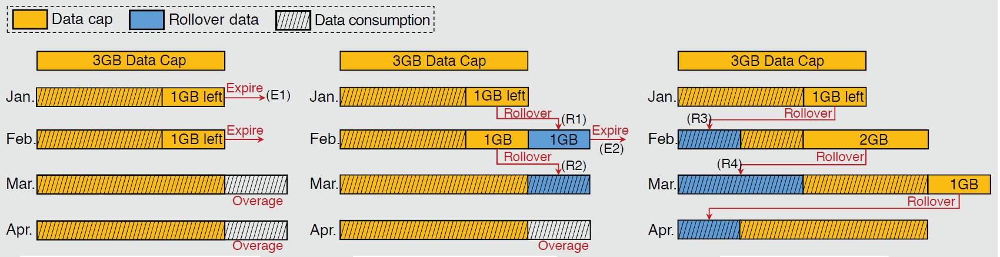
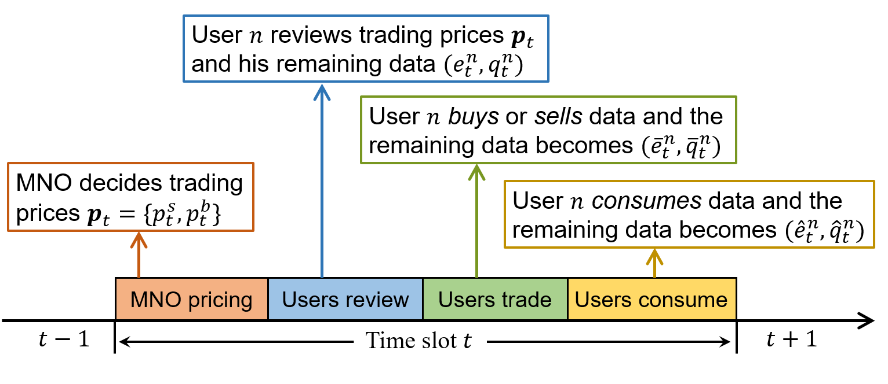
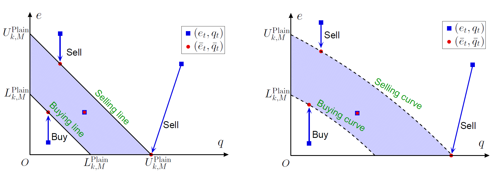
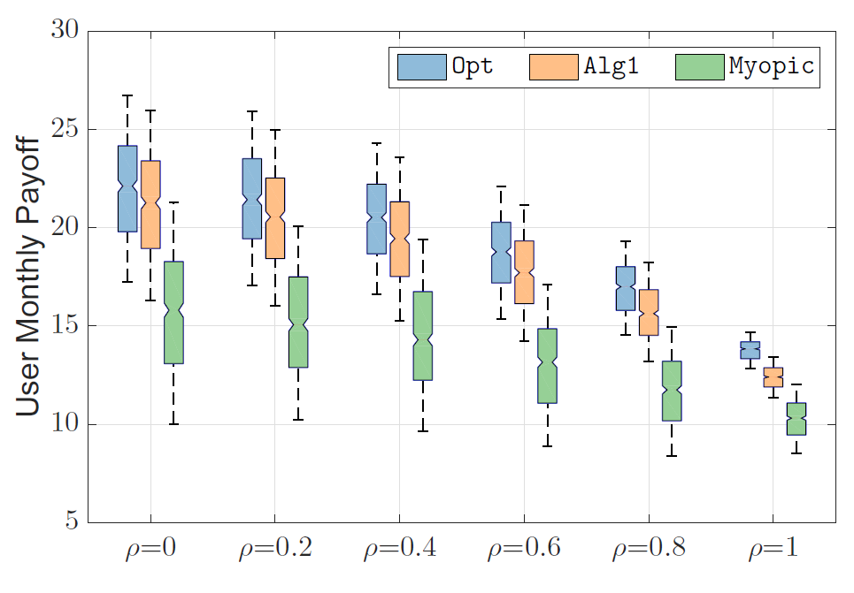
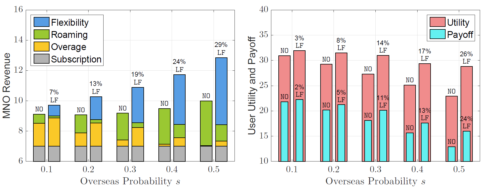

|
Research Areas
Flexible Wireless Network Pricing
Nowadays the growing data demand and more severe market competition force mobile network operators (MNOs) to offer more flexible wireless data services.
The classic wireless data service is a three-part tariff, consisting of a monthly data cap, a monthly subscription fee, and a per-unit fee.
More flexible wireless data service is often in terms of providing additional flexibility in terms of time, user, and location.
-
The rollover mechanism, allowing the unused data in the current month to be consumed in a future month, is a time-flexible mechanism.
We study the economic effect of different rollover mechanisms of AT&T and China Mobile.
Moreover, we take into account the pricing optimization, price discrimination based on the Contract Theory, and the competitive MNOs' game-theoretical analysis.

-
The trading market, allowing users to sell the leftover quota to or buy extra quota from others, is a user-flexible mechanism.
We formulate the interactions between the MNO and mobile users as a Multi-Agent Dynamic Game.
Specifically, in each time slot (e.g., every day), the MNO first determines the selling and buying prices with the goal of revenue maximization, then each user decides his trading
action (by solving a dynamic programming problem) to maximize his long-term payoff.
Due to the availability of monthly data rollover, a user’s daily trading decision corresponds to a dynamic programming problem with two time scales (i.e., day-to-day and
month-to-month).
Our analysis reveals an optimal trading policy with a target interval structure, specified by a buy-up-to threshold and a sell-down-to threshold in each time slot. Moreover, we show
that the rollover mechanism makes users sell less and buy more data given the same trading prices, hence it increases the total demand while decreasing the total supply in the data trading
market.
Finally, numerical results based on real-world data unveil that the time-flexible rollover mechanism plays a positive role in the user-flexible data trading market, increasing the MNO’s
revenue by 25% and all users’ payoff by 17% on average.


-
The day-pass service, allowing users to access his domestic data service with a daily fee in overseas locations, is a location-flexible mechanism.
We study the economic effect of the location-flexibility on the overseas market.
The overseas market comprises users who travel overseas within the month, thus is monthly variant.
Each user decides his joint flexibility configuration and data consumption (J-FCDC) every day.
The user’s J-FCDC problem is an on-line payoff maximization.
We analyze its off-line problem (which is NP-hard) and design an on-line strategy with provable performance.
Moreover, we propose a dynamic pricing policy (based on Multi-Arm Bandit learning) for the location-flexible service without relying on the market statistic information.
We find that the location-flexibility induces users to consume more data in low-valuation days, and the MNO benefits from stimulating users’ data consumption through an appropriate
pricing.
Numerical results based on empirical data show that the location-flexibility improves the MNO’s revenue by 18% and the users’
payoffs by 12% on average.


Edge Computing Operation & Management
Crowd-Leanring in Smart City
|